Sustainability Report
- Pioneering technology – holistic end to end communication solutions
- Strengthening economy - Robust Telecommunication infrastructure to
empower businesses and create employment
- Uplifting society - Improving quality of life and integrating communities
"We are one of the largest employers in the country and with the investment infused into the development of the telecommunication industry via infrastructure, technology and resources, we have indelibly etched our presence as an industry leader"
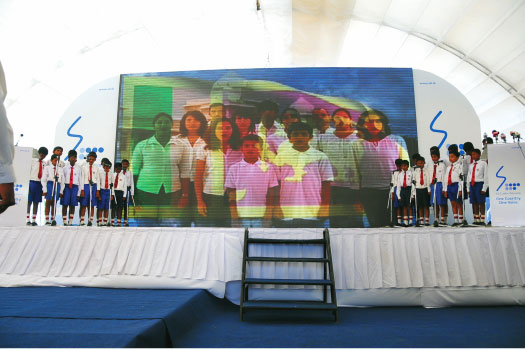
i-Sri Lanka Network Modernisation Project
I-Sri Lanka project - connects people from every community, culture and from all corners of the island, bringing them together while breaking down all physical barriers
"The guiding rules (in sustainable development) are that people must share with each other and care for the Earth. Humanity must take no more from nature than nature can replenish. This in turn means adopting lifestyles and development paths that respect and work within nature's limits. It can be done without rejecting the many benefits that modern technology has brought, provided that technology also works within those." - Caring for the Earth, World Conservation Union (IUCN)
The Sri Lanka Telecom Sustainability Mission
Our business is about connecting communities, using modern technology that truly brings the future into the present. For over one and a half centuries, we have continued to connect our stakeholders – customers, shareholders, valued business partners, investors, government authorities, regulatory bodies, our dynamic team – and the wider community and our environment to ensure that our business positively impacts their lives. Over decades, Sri Lanka Telecom has infused the foundations of the future into the lives of the people of Sri Lanka, and in some cases beyond the country's shores, strengthening the threads that bind modern technology with sustainable development.
From being Future Ready just a year ago, today we have stepped into the dimension of 'The Future Calls'; our physical infrastructure is in place to ensure that plans to create the future we envisage are on track. In tandem, we have aligned our resources; not only with macro national goals but also to meet the aspirations of each of our stakeholder segments. Our actions must be positive, sincere, transparent and accountable, while our stance within the corporate sphere must be that of a mentor and role model, because that is what we are – the national telecommunication solutions provider. Our new corporate identity, 'One Country. One Voice' embodies the path that Sri Lanka will step onto, while far reaching telecommunication solutions remain the unifying factor in creating this togetherness. One Voice heralds the introduction of unique and innovative products and services across voice, data and video, inspired by the vision of connecting all Sri Lankans seamlessly through our world class telecommunication solutions. We have emphatically committed ourselves to maintaining strong principles, ethics and values; while riding on a wave to introduce the world's most modern technology into a country that is surely poised as the hub for the South Asian region. Our sustainability mission has been constructed on the strong premise of The Future Calls.
Being more than ready when The Future Calls, this sustainability report will detail our actions and their impact on our stakeholders; where sustainable solutions go beyond telecommunications and into an arena of sustainable connectivity and networking that conserves and nurtures the country's resources.
Sustainability Reporting at Sri Lanka Telecom
We have gradually developed our sustainability reporting process within the company, in the process to align it to the GRI guidelines. However, given the size and scope of the organization, the process remains challenging. Being a corporate steward with a catalytic role to play in the country's national vision for development, we realize the importance of sustainability in all our actions and their consequences. Furthermore we are aware that the sustainability reporting process will clearly identify the positives, negatives and gaps within our organization. The reporting process continues as we did last year, with more systems and processes added to further aid it.
The reporting process has not been without constraints and challenges. However, it has helped us to identify gaps within the company and make corrections wherever necessary. We remain cognizant that our reporting process must be practical, aligning it with our commitment to the ultimate sustainability of our business and the larger vision of the country.
The period of reporting in this report, detailed via the triple bottom line concept of economic, social and environmental imperatives of Sri Lanka Telecom's sustainability activities is from January 1st to December 31st 2011.
CEO's Message – Sustainability Report for Annual Report 2011
Technology and development are unequivocally intertwined in a nation's journey ahead and our responsibility as a national entity tasked with leading Sri Lanka into an era of becoming South Asia's hub, remains a defined goal. The stature we have gained as the national telecommunication solutions provider is the foundation for this responsibility. However, the permeating effects of this responsibility are far reaching, where the diktat mandates us to encompass all stakeholders on the platforms of economic, social and environmental, where we operate daily on a transparent, accountable, well governed ethical platform to ensure that our impacts are positive on each and every stakeholder segment.

We are one of the largest employers in the country and with the investment infused into the development of the telecommunication industry via infrastructure, technology and resources, we have indelibly etched our presence as an industry leader. This naturally permeates to a strong consciousness for the need for accountability, transparency and sincerity of action in everything we do. We have unreservedly supported the State's national development agenda, which now places the country on a path to becoming South Asia's Economic Hub. Being a strategic partner in the national journey of development, upliftment and sustainability, we have continued to enhance the value of each of our stakeholder segments – shareholders, customers, employees, investors, suppliers, regulatory and other related state authorities, the media, the community and in the larger context, the State. The plans we have implemented over the last few years have thus laid a firm foundation for the country to envisage meeting these ambitious goals and we are truly proud to be an enabling partner in this process.

We have now transformed ourselves into an organisation that is more than ready when the 'Future Calls', having implemented visionary strategies to take the country forward. The drive for sustainability comes as a top down approach, led by the CEO and I, which in effect, gives the necessary leadership for the team to follow. These strategies are constructed on the tenets that our organisation remains a stable, strong and sustainable going concern, very conscious of the role we play in the larger macro panorama of inclusive development. Our investment into constructing and strengthening our national backbone, where the Next Generation Network (NGN) becomes an integral part of connectivity and ensuring that our business strategies ultimately envision state of the art communication avenues for the entirety of Sri Lanka is definitive. Our aim is to develop every corner of this country both rural and urban equitably and inclusively, where tangible improvement will be seen in the quality of life of all stakeholders.
The underlying facet in our Sustainability Ethos is that we are a national development driver, which means that we are inextricably intertwined with every social strata, community and public citizen in the country, meeting their individual aspirations in telecommunications, while working towards the national needs and vision to keep the country abreast of global developments. This Sustainability Report is designed therefore to help us in this process, where we can identify the gaps and constraints encountered in meeting our stakeholder objectives to ultimately work towards a positive outcome for all. This report creates a formula for us to work upon, a foundation and trusses that will help us to further embed our commitment in ensuring that Sri Lanka Telecom will truly be a partner to Sri Lanka and her people in becoming an economic hub in South Asia.
Economic Dimension
Given our stature as a corporate steward and the large investments made by us towards infrastructure, we undoubtedly remain a strong truss within the country's economic development axis. The plans for becoming South Asia's Economic Hub will squarely lay the responsibility of ensuring that the country meets this vision on our shoulders. Nonetheless, for many years now, we have contributed to Sri Lanka's visionary plans by being the driver of innovation and technology, making the country ready for when the future calls. Whether it is in our strategies, innovations and infusion of technology, Sri Lanka Telecom is the backbone to sustainable economic development from a national perspective and our role, we know, is a crucial one as we are the national telecommunication solutions provider. We have continued to look beyond our responsibilities and into the realm of market leader, developing a comprehensive portfolio of products and services that would meet the modern day needs of a customer, through cutting edge technology, myriad innovations and extensive connectivity. Our diktat is to make every Sri Lankan ready to take on the mantle of the challenges of the future with confidence, knowing that Sri Lanka Telecom remains a stable and solid partner to meeting national development goals.
Building on the milestone we achieved last year of having reached revenue of Rs 50 Bn, this year we continued that upward momentum reaching Rs 50.95 Bn in revenue, further augmenting our bottom line. This cascaded to our contribution to the Government Treasury reaching Rs 1,754 Millions, which signals a true partnership with the Government, as these funds are being utilized towards meeting the vision of an economic hub.
We remain a fundamental partner to the Government's inclusive growth policy, using our connectivity platform as the conduit to permeate growth to all social strata. This allows large, small, medium and macro business to network and create an enabling environment, and encourage entrepreneurship. Given our networking capabilities and introduction of new technology, including networking all electorates this year through our nationwide telecommunication backbone, our input ensures balanced regional development. This also ensures that even the most challenged and difficult geographical areas and communities remain networked for development; including the accelerated development drives aimed at the northern and eastern provinces as well.
As of last year, Sri Lanka presented well laid plans to drive the country towards becoming a key economic hub for the South Asian region in five driver areas: energy, knowledge, maritime, aviation and commercial hubs. Each of these hub drivers requires state of the art technology strategies to ensure that it meets its goals. This is where the Future Calls. Sri Lanka Telecom, while being an integral catalyst in all these hubs, has an even more crucial role to play in both the Knowledge hub and Commercial hub. With IT literacy and Internet access cascading to all and the creation of knowledge based jobs being objectives, Sri Lanka Telecom has already laid the foundation and trusses for these targets, with increased penetration, increased connectivity and added Internet access, throughout this year.
Sri Lanka Telecom's emphasis on creating an empowering milieu for the country to succeed is evident when comparing telephone density (telephone per 100 persons); in 1980 density was 0.4, while in 2011 it is 105.3. Similarly, expectations are high as the Government remains highly dependent on ICT being the nexus in meeting its goals as in the establishment of the first IT Park in Hambantota. SLT actively supports the Government's initiatives and will continue to advance the concept of a BPO hub to reach US $1 billion by 2015. With broadband and other technological imperatives gaining added impetus, Sri Lanka Telecom's technological advancements to aid the establishment of a commercial hub has also gained momentum, with ports, aviation and tourism gaining considerable technology thrust from us.
Investor Relations
Sri Lanka Telecom continued to meet the forecasted targets for the year, investing astutely in both infrastructure and knowledge to create a 'connected milieu' for the country, while also ensuring that the investments do bring in the anticipated returns via a stable investment platform. From a Future Calls perspective, Sri Lanka Telecom certainly met its goals for the year, while ensuring that penetration remained above expectations.
Our share price retained its strong consistent performance, beginning 2011 at Rs 49/-, and given the trend over the last year as well, infusing confidence among investors due to this consistent trend. The Government of Sri Lanka and Global Telecommunications Holdings N.V, hold more than 94% of issued share capital of the Company, shares held by the public remains below 6%.
Investment for 2012 will continue on this momentum. Our immediate investment plans include focusing vitally on the i-Sri Lanka Project, growth of broadband capacity while extending broadband penetration and the expansion of fibre aggregation and access networks.
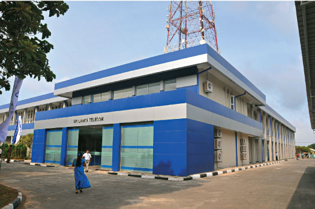
"Investment for 2012 will continue in this momentum. Our immediate investment plans include focusing vitally on the i-Sri Lanka Project, growth of broadband capacity while extending broadband penetration and the expansion of fibre aggregation and access networks."
List Of 20 Major Shareholders Based on their Shareholdings as at 30-Dec-2011
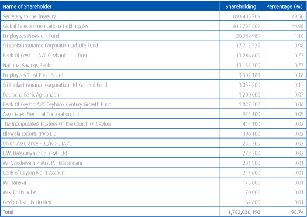
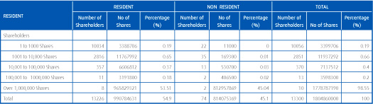
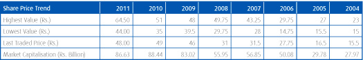
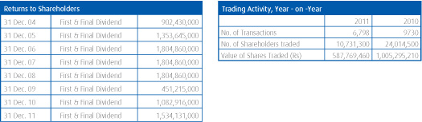
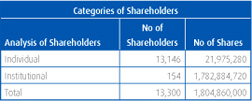
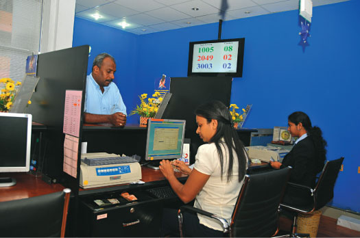
Sri Lanka Telecom is one of the country's most valuable blue chip companies with an annual Group turnover of Rs 50.95 billion as at end 2011. The two main shareholders of Sri Lanka Telecom as at year end were the Government of Sri Lanka which held 49.5% through the Secretary to the Treasury and Global Telecommunication Holdings N.V. of Netherlands, which owned a 44.98% stake. The balance shares are publicly traded.
The company has been awarded a National Long Term Rating of AAA (lka) and a BB- rating on Long term Local Currency and Foreign Currency by Fitch Ratings, followed by BB- local currency and B+ foreign currency Credit Ratings by Standard & Poor's.
Awards and Accolades
The Future Calls platform has been strengthened continuously through the years, primarily due to Sri Lanka Telecom's commitment to customer service excellence. This commitment was amply rewarded when in March 2011, Sri Lanka Telecom won the People's Award for the Most Popular Fixed and CDMA Telecom Service Brand of the Year at the SLIM Nielsen People's Awards.
Innovation and technology are primary supports of our future journey. They have spurred Sri Lanka Telecom to become a true leader in telecommunication solutions for the nation; best practices, global trends, apt systems and processes and being astute in investing in the right people for the right job are continuous priorities. This focus too has continued unabated and saw recognition at the National Business Excellence Awards organized by the National Chamber of Commerce where Sri Lanka Telecom received two silver awards in the Infrastructure and Utilities Sector, and as the Best Knowledge Integrator.
In addition, our unrelenting focus on creating a quality intensive organization too has borne fruit. We continued to win awards for our various SBUs and business entities this year, and topped the list in gaining six awards at the JASTECA Taiki Akimoto 5S awards, which encourages organizations to infuse and practice the popular Japanese management techniques that has brought in an environment of high productivity, quality assertiveness and best practices into organizations globally.
Our Valued Business Partners
Our valued business partners comprise vendors, suppliers, customers and retailers, all integral partners in our journey of being ready when the Future Calls. These are partners who are true stakeholders to our success and work on a partnership built on a win-win platform within a relationship that has been nurtured and strengthened over time. They have unequivocally bought into our ethos of presenting inspired solutions, conforming to best practices and continuing our forward thrust on sustainable development practices. Being a highly evolutionary industry within the global landscape, it is imperative that Sri Lanka Telecom remains a few steps ahead of the envisaged trends; ready for the future with solutions that will enable the nation to meet its goals. This therefore infuses the concept of our valued business partners becoming driving factors in creating an enabling environment for us to take those solutions to our customers.
Over the years, Sri Lanka Telecom has truly become a corporate steward; introducing and ingraining ILO espoused labour practices, prevalent standards and certifications for improvement, operational and ethical, transparent and accountable principles where governance and risk management are paramount for sustainability into our daily culture, which naturally flows to the business landscape of our valued business partners. This has seen a significant transformation of their businesses, while we continue to embed newer technology and best practices into our own processes. Concurrently we notice our valued business partners become extremely conscious of the need to adhere to ethics, governance practices, accountability, reach benchmarks and be focused on timely delivery for the makings of a very successful and on-going business model.
Rewarding Dealers
Felicitating our dealers who have contributed significantly to meeting our goals is an annual event and one that is much anticipated to in the Sri Lanka Telecom calendar. This year, the Annual Dealer Convention rewarded the best dealers with numerous prizes including airline tickets, motor bicycles and holiday packages. Recognizing high performance also forms a firm foundation for Sri Lanka Telecom to build an even stronger relationship with our dealers and encourage high achievement continuously. Continuing to maintain and improve the consistency of service through our dealer network ensures total customer satisfaction and allows customers accessibility to our entire gamut of products and services throughout the country.
Procurement Procedures
With accountability and transparency being an overarching factor in our daily operations, we have instituted very transparent processes in procurement, as we strongly believe that sound economic fundamentals must be instituted to ensure a win-win solution for both the procurer and supplier. All procurement has a standardized format built on levels of transparency. Tenders from interested suppliers are initially called for and Sri Lanka Telecom uses its secure complete online tendering and procurement system to add meritocracy to the process. The online system allows easy registration, is cost effective, and allows a choice of immediate notification of status of surveys. These survey methods use SMS and email, and allows systematic amendment notifications, while being efficient, speedy and completely paperless.
Supplier Dialogue
Our open dialogue culture that has extended to suppliers has become a significant forum in creating a seamless value chain in our operations. In addition to the suggestion and complaint box available for suppliers, the continuous surveys further augment this process, ensuring that we gain frank and up to date information and feedback from our suppliers.
Our Customers
Customer centricity is the lifeblood to sustaining our business and to further cement this premise we launched a new corporate identity this year. "One Country. One Voice." reflecting and echoing what Sri Lanka Telecom is all about. A corporate steward that is spearheading the mindset of the nation on a platform of unity, not merely connecting the country geographically but through innovation, through economic and social strata, through networking communities and through technologically advanced products and services. All this through being the national telecommunication solutions provider, connected through One Voice.
Our brand leadership is well espoused and evidenced in the repeated People's Awards we have won, including one this year. This top of the mind recall and well-ingrained brand identity has given customers added confidence in our living up to our brand promise and brand values. We have continued to deliver on our promises, and this has nurtured and sustained our relationships over the years with our customers. Our promise of quality, innovation, technology advancement and customer service excellence – coupled with state of the art infrastructure supported by a highly specialized team whose experience spans decades – has given us an undisputed positioning by our customers as the premier telecommunication services provider.
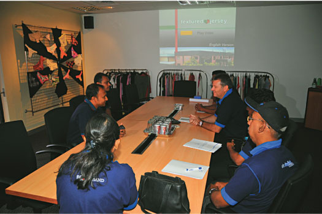
The fact that the Sri Lanka Telecom Call Centers and Customer Centers are all now fully fledged ISO 9001:2008 certified units has brought into daily operational systems the positives of Quality Circles, Continuous Improvement Teams, Kaizen and 5S to augment the customer service environment. We continued to win awards this year at the JASTECA Taiki Akimoto 5S awards and also continued to add more and more of our SBUs, call centers and customer centers into the practice of 5S and Kaizen. In addition our emphasis to quality was further rewarded when Sri Lanka Telecom was conferred with six awards as well as special commendations at the National Quality Circle Convention organized by the National Productivity Secretariat, where the Colombo Call Center, the RTO Kotte, Negombo, Havelock Town and Gampaha and the OPMC Narahenpita did exceptionally well.
"All this is only possible through a dynamic team who believe strongly and assuredly that they drive the future"
The excellence displayed by our customer service teams was showcased when two members of our team received laurels from the Sri Lanka Institute of Marketing at the National Sales Congress 2011 winning the Outstanding Front-liner of the Year Award and gold and bronze awards under the telecommunication category.
SLT Customer Day
One of our most exciting initiatives this year was SLT Customer Day, based on the slogan 'We Listen – You Talk'. Constructed on the theme of 'Knowing our customers to keep our promises', the idea was to enable every executive within Sri Lanka Telecom to interact directly with customers to gain first hand insight into how our brand, products and services are perceived. Begun in January – under the aegis of a special Customer Day Committee appointed from the Regional Group, Marketing Group and Transformation Programme Office – the monthly programme covered a cross section of our customer base from corporate to residential. The modus involved randomly selecting customers to be visited by a prenominated Customer Visiting Team, who on visiting these customers will obtain feedback, which will be pooled and analyzed for problem identification. By prioritizing the problems discovered, major issues will be disseminated to the relevant departments/sections for immediate attention and quantitatively measured on the Customer Experience Index.
Customer Satisfaction & Complaints
While we do work on systems and processes that include customer satisfaction gauges as laid down in the guidelines for ISO certification, this year marked a benchmark year for our pioneering Customer Satisfaction Survey based on the data found via the SLT Customer Day. The data gathered proved to be a useful tool in our efforts of continuous improvement. The Customer Satisfaction Survey (CSAT) is worked on obtaining a clear understanding on customer perception and helping our team on six valid benchmarks:
- Doing ordinary things extraordinarily well
- Being at our best – always
- Going beyond expectation
- New ways to delight
- Adding value
- Taking care of customers like one's own family
For the year 2011 the regional operational plan was prepared based on the "Keeping Our Promises" (KOP) framework, with emphasis on ensuring an excellent customer experience. The regional staff are responsible for the Customer Satisfaction strategic theme for the year and prepared to support the achievement in line with the strategic themes. The KOP framework provides the basis for constructing the KPI for quantitatively measuring the customer experience in terms of 'Keeping Our Promises' – a single score for the whole organization which gives the absolute value to the promises made on service delivery and service assurance according to the rates which are met.
In order to enhance the services provided to SME customers and improve the relationships customer forums were conducted in several parts of the country which were found fruitful.
A tools day was organized to distribute new tool kits for Regional field staff and Network staff so that the employees will be properly equipped when they visit the customers. 500 Tool kits were distributed among the field staff on that day.
Continuous process improvements were carried out to reduce the gaps and meet the customer service excellence. Special attention and care was given to Enterprise and wholesale customer segments to meet the Service Level Agreements.
Sri Lanka Telecom's customer loyalty remained unchallenged and there was consensus that brand quality recognition remained at high levels. An area of opportunity that arose was that 43.9% of the surveyed customer base, requested Sri Lanka Telecom to create new business opportunities.
Areas for improvement according to survey findings:
- Speedy provisioning of ADSL services
- Enhancing customer relationships
- Improve account management
- Prompt actions for problems
- Introduce more packages for the business community
- Enhance technical skills and attitudes of frontline and field teams
- Parking facilities required at Teleshops
Implementing ISO 9001:2008 throughout the organization: Given the holistic features involved in implementing the tenets of the ISO certification programme, by bringing the whole organisation under the ISO umbrella, Sri Lanka Telecom will have even more efficient systems and processes in place to deal with customer issues/complaints and suggestions. We are now in the process of implementing ISO with a focus on further improving quality, efficiency, responsiveness and high levels of customer service.
Key Customer Service Features
i-Sri Lanka launched
Seamless connectivity through world-class technology was the platform upon which Sri Lanka Telecom launched its high-speed islandwide broadband network modernization project. Billed for completion in total by 2013, the project will equip 90% of fixed line customers with the capability to achieve bandwidths of up to 20 Mbps. Set to revolutionize the very concept of broadband connectivity in Sri Lanka, we are upgrading the existing copper based access network with a sophisticated fibre optic network, enhancing connectivity through FTTN (Fibre to the Node) technology giving customers high speed, reliable and quality broadband data exchange.
Megaline enhanced with value propositions
One of our most significant customer initiatives this year was the relaunch of SLT Megaline; positioning it as one line that offers three unique experiences. Bundling three special packages based on Single Play (Telephone only), Double Play (Telephone and Broadband/PeoTV) and Triple Play (Telephone, Broadband and PeoTV), the packages were extended to both residential and business customers.
Broadband new packages, upgrade and enhancement
With new broadband portfolio enhancement, customers have the freedom and flexibility to choose from a wide selection of broadband plans at affordable prices to meet their individual needs. Services introduced encompassed downstream speeds of up to 4 Mbps for SLT Broadband internet customers. For customers with a SLT Megaline home/business telephone, broadband connection was offered starting at Rs. 500/= per month without a connection fee. Quality of Broadband for existing customers was significantly enhanced. The company has successfully improved overall quality of Broadband and data speeds through changes bandwidth management and substantial upgrades in international internet capacity.
More attractive broadband features and major enhancements were offered with an automatic 100% bandwidth upgrade for existing 'Entrée' Broadband customers who will enjoy speeds up to 1Mbps; and a significant increase of included data for all volume based broadband packages during the year 2011. We also revised other Broadband Packages by reducing monthly rentals.
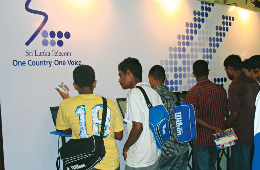
Tele Life Insurance
In partnership with Sri Lanka Insurance, the country's largest state owned insurer, Tele Life Insurance was launched for Sri Lanka Telecom customers between the ages of 18 and 70 years, giving policy holders death benefits and total disability cover. The monthly subscription added to the telephone bill eases premium payments as customers can pay both their telephone bills and life insurance premium in one single payment.
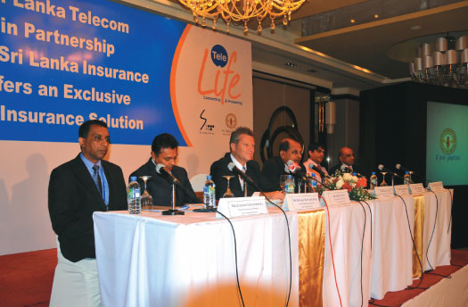
Dedicated SME Support Team
A dedicated SME unit was instituted within our organization to give the SME entrepreneurial and business segment of the country further impetus to add to the accelerated economic drive. Organizing SME Forums for customers in this business category augmented the effort. The Forums held for the Central and Southern provinces and based on the theme 'Beyond Borders', had large number of customers participate in product presentations, a demonstration of SLT products as well as relationship building activities. Currently, Sri Lanka Telecom has 3,500 SME accounts within its portfolio with 100% retention as at end 2011.
1919 Government Information Centre
The Government of Sri Lanka awarded the Call Center for the Government Information Center to Sri Lanka Telecom, which comes under the umbrella of the Presidential Secretariat and the Information and Communication Technology Agency (ICTA). This is a conduit that provides the public with access to information on the state sector; by dialing 1919 through any network, the general public can gain a host of information. The Call Center currently deals with 5,000 callers per day.
Customer touch points enhanced
Four more Teleshops were added to our widely expanding Teleshop network this year in Moneragala, Jaffna, Kilinochchi and Embilipitiya, increasing our customer touch points and enabling us to showcase our products and services better. In order to enhance the SLT image and infuse continuity into our entire brand identity, we also rebranded the 36 Internet kiosks at the airport, with are new identity. These kiosks enable customers to avail themselves of Internet facilities free of charge. Bill payment points too were increased to more than 3500, with customers now having the option of paying bills through leading banks, consumer retail entities and supermarket chains.
Telegram Services upgraded to SLTits
Having provided telegram services successfully since 1858, which we consider a part of our social responsibility, it became imperative that we move away from the archaic switch telegraph system to a new, more modern, integrated web managed telegraph system. This system named SLTits was launched in March 2011 and has enabled us to overcome numerous limitations that existed previously, enabling messages to be relayed accurately and efficiently.
Best IDD Rates
In a bid to gain a competitive edge in the IDD market and to boost income from this very lucrative business area, we introduced the best IDD rates in the country to frequently called countries based on their national days. This was further enhanced when we offered the best IDD rates to all 52 Commonwealth countries on Commonwealth Day as well.
Enabling the visually challenged
Braille bills are available on request for visually challenged customers. We believe that as a corporate steward, inclusivity and empowerment is a rule rather than an exception. Braille bills which were introduced two years ago, are used by considerable numbers of our visually challenged customers, creating an environment of independence for this segment of the community who have to otherwise rely on others to gain bill information.
Governance
A massive segment of the Transformation Programme instituted within Sri Lanka Telecom is the overriding need for transparency and accountability in how we run our business. Governance remains a fundamental, an unshakeable foundation that we use to build a very successful and sustainable business model. Over the last few years, we have instituted changes within, and observed the perceptions change externally about our organization. We are now considered a leader, a corporate steward, a market changer and an innovator. Similarly, in the corporate environment, we stand shoulder to shoulder amongst the top corporates of the country. We are recognized for our governance principles where transparency, accountability, sincerity of action and values reign supreme. We strictly conform to the stringent governance and accounting policies and guidelines prevalent within the country wherein our financial, governance and risk management policies are in conformance to the standards and guidelines laid down by the Institute of Chartered Accountants of Sri Lanka, the Telecommunication Regulatory Authority of Sri Lanka, the Government of Sri Lanka and other relevant statutory authorities that govern such issues. (A more detailed version of our corporate governance and risk management practices is contained in the Corporate Governance Section of this report ).
Social Dimension
Building a sustainable business is driven through stakeholder relationships and while these relationships are multi-faceted, the common conduit is that each stakeholder segment must have the confidence of seeing the organization as a true partner to each other's success. From a social dimension, sustainability reporting calls for entities to look at both the human resource aspects and the community at large as the sustainability of our business rests primarily on these two stakeholder segments. It is the team that drives business to new heights and therefore builds a sustainable economic dimension for the business to flourish in the long term and the community being empowered by the very presence and proactive-ness of the organization, so that the community's growth prospects are unequivocally tied to the growth of the organization as well.
The Future Calls a Prepared Team
Whether it's in innovations, engineering feats, entrepreneurial culture, unparalleled professionalism or varied communication strategies, the team at Sri Lanka Telecom has worked on the premise of connectivity across the nation, as a leader and enabler that empowers communities to achieve unimaginable goals. All this is only possible through a dynamic team who believe strongly and confidently that they drive the future. There has been unstinted cooperation and togetherness among our team, a united banner that they have worked under to ensure that the future is already prepared when the country is called to function in a futuristic environment. Whether it's in quantifiable bottom line results, or in qualitative initiatives that have enhanced innovation, efficiencies, management systems and processes and service levels, our team has broken down barriers to work under a common umbrella of taking our business beyond the concept of Future Calls. Truly epitomizing 'One Country. One Voice', we are proud of our team, of their achievements and their untiring contribution to making
Sri Lanka Telecom a true leader in the telecommunication industry.
Our team now comprises a total of over six thousand members, which constitutes a healthy mix of professionals, technical experts, management, field operatives and a dynamic support staff. We have now introduced a performance based culture that has seen our team thrive on the challenges and opportunities as well as the recognition the organization bestows on high achievers. Our recruitment policy, based on the paradigm of 'the right person for the right job', concentrates primarily on internal head hunting rather than external recruitment, although in specialist competencies, it is in our best interest to gain external specialty where necessary.
A platform of equality
We are an equal opportunity employer, adhering to all relevant ILO and other relevant statutory regulations pertaining to employment procedures. All recruits, male or female are treated with equality, where meritocracy overrides all other factors in promotions, benefits and career progression. We ensure that the working environment for our team is devoid of discrimination and harassment of any kind, instituting stringent policy adaptations and continuous reviews of existing policies. We encourage our team to use technology for personal development as well as to seek awareness on regulatory and policy issues that have an impact on their working lives.
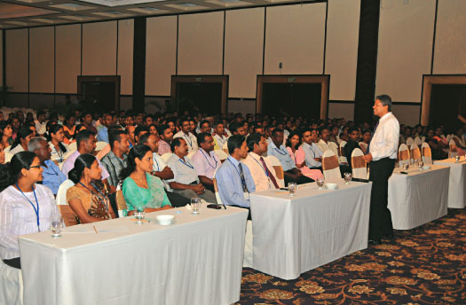
"Striving to gear our team towards joining us in our journey of making Sri Lanka an IT enabled nation, where inclusivity is the driving factor in development, training and development gained ground to ensure that these are met"
The Transformation Programme gains more ground
With customer centricity being a catalyst within the Transformation Programme, the new brand identity 'One Country. One Voice' created an even deeper sense of loyalty and gung ho attitude among our team as seen from the added vigor and motivation observed during the year. Whether it was customer trends, future technological features or industry challenges, our team was truly ready and equipped to deal with opportunities and challenges, infusing the various dimensions embedded within the Transformation Programme. Based on a pragmatic Business Plan, our team worked in cohesion to ensure that the targets within the six focus areas of Product, Business Processes, Networks, Business Model, IT systems and Organisation were met; instituting best practices, waste and cost management features, improving processes, systems and efficiencies. Six new capabilities were introduced to business.
The eleven end-to-end processes that were completed this year by the Business Process Re-engineering Division involved the three process groups of HRM, Physical Resource Management and Finance Resource Management, while sales were also given additional focus. This meant that our HRM worked on more rounded holistic programmes to keep the team focused on goals and objectives.
The Annual Transformers Awards took place this year, recognising the most outstanding performances achieved by members of the team in meeting the goals of the Transformation Programme. This also acknowledges the hard work, commitment and loyalty displayed by the SLT team, whilst being equipped for the challenges in a very competitive environment. The awards also position the team to reach out to future opportunities, observe new trends and ready themselves for those challenges, and maintain customer centricity, which is what Sri Lanka Telecom is all about. The most outstanding performers were recognized for their key roles in communicating and cascading the company's vision, mission and values to the entire team; for change championship in implementing the Enterprise Reporting Tool and Project Tracking and Reporting Tool and the high achieving teams for project management excellence.
Grievance handling
While Sri Lanka Telecom has a comprehensive published Code of Conduct for all personnel within the organization, the grievance handling procedure that was introduced last year was further augmented this year with the introduction of a disciplinary committee. The streamlined transparent grievance handling procedures are aimed at fostering harmony and understanding among the team and also between employee and employer and has been a useful tool in ensuring industrial harmony across the board. Into this procedure, we have added counseling, awareness creation and education on a wide range of topical issues, which have over the last five years, seen the positive feature of a decrease in absenteeism, which was a significant challenge for us to overcome.
A disciplinary committee, comprising five members and headed by the CEO aims to add a further unbiased and independent view point to issues that come to its attention. Decisions are discussed impartially to obtain recommendations and solutions that would be bona fide to the issue at hand.
Industrial Harmony
Sri Lanka Telecom has a total of 35 trade unions functioning within the industrial umbrella but it is certainly commendable that in the last five years, cordial relations have been strengthened paved the way to minimize industrial disputes. The change culture we introduced had the input and support of the trade unions, who in turn permeated the message positively to its membership and also ensured that no industrial disputes came in the way of progress. The unions, some of which are politically affiliated, have been an amazing partner in our bid for change, where transforming mindset, introducing new systems and processes and creating a performance driven culture were significant challenges which the unions cohesively helped us through, with a smooth transition. We have made every effort to have an open culture in place, where dialogue remains on a level playing field and all issues are sorted in an equitable and unbiased manner. Myriad communication channels create an ethos of openness and display a commitment on both sides to journey towards a common vision.
Sri Lanka Telecom also has a dedicated unit focusing on improving healthy industrial relations through the Employee Relations & Benefit Management Unit coming under the HR Department. This Unit is tasked with organizing and conducting regular meetings with unions comprising at least two formal discussions monthly and informal meeting daily. These plans are included in the Annual Business Plan, and an open door policy is maintained, with direct access to the Deputy General Manager Employee Relations even without prior appointments. These steps provide awareness to unions on the negativities of adversarial action and instituting Organizational Development Programmes to improve the working culture; maintain a close relationship with related regulatory and government authorities including the Labour Department and EFC and bring in experts and consultants for awareness programmes; play a supportive role in organizing events for union members and introduce comprehensive Occupational, Health & Safety initiatives to ensure the health and safety of the team in the workplace.
The Management signed an 12(1) agreement with the unions in August 2011 presided over by the Labour Commissioner, to continue awareness initiatives on Collective Agreements and Collective argaining in preparation of the signing of the Collective Agreement in 2012.
The SLT HR Policy
Building a high performance culture through a performance driven environment, where loyalty and long term commitment remains the foundation for our team; resulting in becoming true partners in Sri Lanka Telecom's journey for the future.
Driving a Performance Driven Culture
The team of six thousand remains committed to the sustainability of Sri Lanka Telecom. This is evidenced in the bottom line successes and the overall improvement observed in mindset, commitment, customer service levels and innovation. We introduced our performance management initiative in 2009 built on a springboard of empowering employees to achieve the organization's objectives.
Performance is measured annually on well-defined individual and organizational objectives and metrics that reflect, and are positively correlated to, the Company's objectives. These are aligned to employee, management and stakeholder interests. A customized 'pay for performance' scheme based on the pillars of individual performance rating and organizational performance rating was implemented last year for all group employees.
As mentioned above, planning, recruitment and merit selection processes contribute to the alignment of the staff profile with the current and emerging strategic directions, which in turn are designed to make a positive and valued contribution towards our end objectives.
Promotions, rewards and remuneration are based on competencies, skills and experience in implementing job responsibilities successfully. We strongly believe that promotions should not only constitute career advancement but be aligned to motivational opportunities and meeting of individual career aspirations as well.
The newly introduced remuneration structure encourages greater commitment and engagement evolving on our business with clearer long-term focus. The main elements of the remuneration package offered to employees are sufficiently competitive to attract and retain highly experienced and talented individuals.
As future HR strategies, we intend to maximise on utilisation of human capital, improve further on our performance culture, strengthen industrial relations, develop capacity and competencies of frontline team members and make accountability an imperative to periodic measurements of rewards and performance.
Creating the Knowledge Gaining Culture
Training and development continued with added momentum this year as various initiatives were introduced aligned to not only the Business Plan and Transformation Programme, but also the new values and identity infused through the new brand identity launched at the beginning of the year. We continue to strive to gear our team towards joining us in our journey of making Sri Lanka an IT enabled nation, where inclusivity is the driving factor in development, training and development.
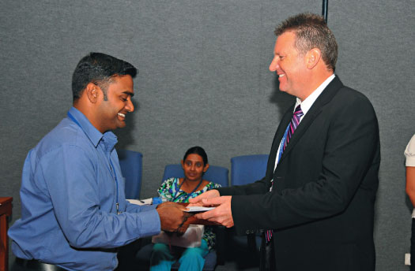
Internal and external training workshops are conducted by the Training Department, with some aligned to training needs and individual career goals, while soft skills are also developed in tandem. Customer centricity was taken to higher levels with a notable emphasis on customer focused Training & Development programmes bringing the entire team under a common umbrella of service. This year saw our team members engage in regular meetings and discussions including the Annual Business Plan meeting, gaining extensive exposure and knowledge in various areas of competencies. They participated in workshops, seminars and conferences conducted by industry and management professionals from Sri Lanka and abroad as well as electronic training videos that brought the principles and practices of world renowned management and sustainability gurus into the workplace.
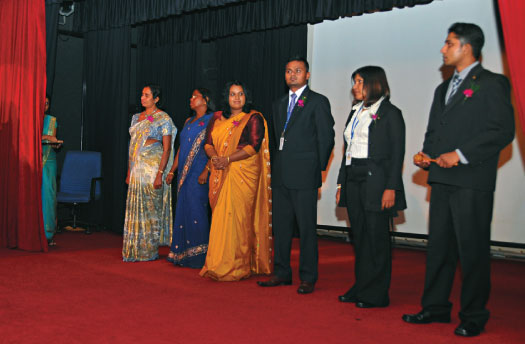
Training and Development
Training & Development has taken many initiatives to uplift the competencies and capabilities of our staff during year 2011. Foreign and local trainings were provided to SLT staff in order to get the required competencies and capabilities to execute their jobs in implementing the i-Sri Lanka Project. Training on Risk Management was provided to SLT top and senior management team under Company Transformation Program. Training programs were arranged to improve the cross selling and up selling capabilities of all front line staff who were working at customer touch points. After restructuring of the regional Operations, Out Bound training was provided to all executives in the group with the aim of team building among the group, which was a great success. Provincial Sales Managers were newly appointed and Training Division has helped to provide required trainings for them to perform their new roles. A workshop on Refining and repositioning the role of executives was another initiative that has been successfully executed in year 2011 for all executives in the Finance Group. The SLT Training Center is conducting training courses for the younger generation and for those who are looking for careers in the Telecommunication industry to pursue their tertiary education. BTEC Higher National Diploma and City and Guilds courses have gained high popularity in the past and students are enrolled annually for these Courses. The annual BTEC award ceremony was conducted at the Water's Edge Hotel in August 2011 for those who graduated from the 2008-2010 batch.
e-Learning
e-learning is now a firm learning tool within the Training and Development functions at Sri Lanka Telecom and a number of programmes were conducted through this methodology. The e-learning modules are based on a comprehensive manual that enables team members to work at their own pace in a variety of subjects and specialties, while continuing to productively work at their jobs with minimum disruption.
Metro Quiz through e-Learning
A significant feature of this year's Metro Quiz was that some staff members participated through e-learning, which was first time for this knowledge gaining exercise. The Metro Quiz provides a broad spectrum of the subjects at hand, while heralding an era of increased customer service levels.
SLT Libraries
The latest range of books, magazines and periodicals in both hard copy and electronic formats continue to be added to the three libraries which now have a collation of over 30,000 books. These libraries are located at Head office, Havelock Town and the Welisara Training School. The Havelock Town library is open not only to members of our team, but also to their family members as well.
Amathuma/Digital Life magazine
A tri-lingual internal magazine, which collates the latest activities, news and information pertaining to Sri Lanka Telecom and the industry, this magazine, is also a memoir of past activities and individual achievements of both team members and their families. A dedicated segment on nature and eco-friendly initiatives, in addition to Digital Life that disseminates information about the latest technological innovations, add lustre to the publication. To effectively optimize company resources, the publication is now circulated once in two months.
Art Watch
This internal newsletter circulated via the Intranet every Wednesday, collates vignettes of the latest most up to date industrial and cultural information, including events and programmes scheduled for the week.
Frontline Officers Empowered
A two-day workshop was conducted for the first time for Teleshop Managers, Front Office and Back Office Managers at the Welisara Training School in order to uplift customer service capabilities and customer service standards. Conducted by external resource persons, about 90 managers from Regional Telecom Offices and Teleshops participated in this workshop.
Sri Lanka Telecom Toastmasters Club
Now in its fourth year, the Sri Lanka Telecom Toastmasters Club, affiliated to Toastmasters International, continues its proactive interaction with team members, encouraging them to exude confidence and professionalism in the workplace and beyond. The objective of the Toastmasters Club is to create sustainable leaders who can confront challenges with confidence, which is very apt for the journey ahead.
Open Culture
Since our change culture was introduced five years ago, we have striven to create an open environment for our team members, where dialogue remains a two way process conducted in an open and trusting environment. The open door policy we espouse calls for an augmentation of this two way dialogue while – from an emancipated process of performance evaluation, performance based remuneration and rewards, training, career progression, a constantly evolving and improving work environment – we have introduced the dissemination of information and an inclusive approach to all operations and features within the organization.
Comprehensive communication channels ensure that all team members are kept informed of management decisions and other important announcements. However, regular meetings and discussions (including the Annual Business Process meetings) are held every year forming the bedrock for more macro decisions.
Details on new product launches, Sri Lanka Telecom innovations, services and branding are emailed to all employees via circulars. Furthermore, newsletters and Intranet initiatives also add to the open communication culture we espouse.
Awards as Rewards
Sri Lanka Telecom Star Awards
In rewarding our high achievers, the Star Awards Ceremony recognized the best Call Center team members who have been instrumental in upping the service bar at all call centers. The officers are responsible for delivering myriad services including product and service information, fault reporting, billing information, technical assistance and handling customer complaints.
SLT Collection Awards
For the first time, we decided to reward and recognize the performance excellence of team members in the Collection and Recovery Division and other related units. This was to acknowledge the support they have given the collection, credit control and recovery processes, making a significant contribution to our bottom line. This serves to also encourage team members to achieve targets while inducing other departments to provide as much support as possible for them to achieve their targets.
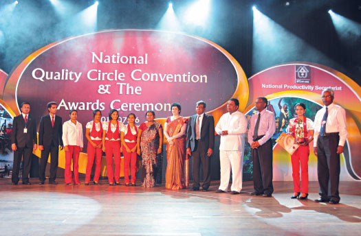
The Quest for Quality
Our quest for quality is unending and in observing the rewards we have received via numerous awards, we have been most successful. However, the journey is one that is continuous, as quality is a bar that is constantly moving upwards. Thus, we strive to meet it or exceed the benchmarks set. We have worked on the single-minded focus of continuous improvement and have embarked on a concerted drive towards improving quality standards, processes and systems.
Establishing of the Quality Steering Committee comprising all chief officers to provide guidance on overall strategic direction of the company's Quality management system, is another key milestone on our journey towards excellence.
SLT Quality Convention 2011
The annual SLT Quality Convention was conducted under the themes, 'Customer Satisfaction' and ' Efficiency Improvement'. With the aim of transforming Sri Lanka Telecom to a more customer centric market driven entity. This also heralded the company's single minded focus to commence the implementation of ISO 9001:2008 to the entire organization.
Measures were also taken to implement 5S quality concepts, which are based on the improvement of productivity, safety, quality, employee morale and reducing wastage, to all offices and departments, as well as establish Quality Circles and Kaizen suggestion schemes for problem solving and continuous improvement.
Competitions were held and awards presented to those teams excelling in the areas of implementing ISO 9001:2008 Quality Management System, 5S, Quality Circle/Continuous Improvement, Kaizen, poster and slogan competitions.
Occupational Health & Safety
Being an industry that deals with engineering and technology, it is vital that our team members feel safe and secure while working a responsibility that lies with all of us. The dedicated Health and Safety Unit mandated with establishing and implementing health and safety matters conduct regular health and safety education programmes to institute a safety conscious team.
Health & Safety Week
The Health and Safety Week organized in October forcused on this message of good health for all, while also permeating the underlying factor that a healthy workforce is a productive workforce. Four practical safety programmes were held in Kurunegala, Kandy, Matara and Welisara to create more awareness of health and safety. Poster and sticker campaigns served to augment the message further. There was also a health and safety quiz. This year, we commenced the compilation of a Health and Safety manual aimed at aiding prevention of workplace accidents and ill health.
The workshops and seminars conducted this year included diverse areas of health and safety, but with the overarching intention of emphasising the importance of the health and safety of each individual and the team in the larger context of things. Workshops were held on the prevention of heart disease, work life balance, fire safety, cancer control and ill effects of alcohol and tobacco. A free Bone Health Check for all team members above thirty years was also conducted in a bid to detect, prevent and treat osteoporosis. Circulars and newsletters are used as a communication channel for further awareness and this year we published news on crane safety, dengue prevention and spread, ergonomics, fire safety, food safety, heat wave, flood and lightning hazard precautions, janitorial safety, personal protective equipment, power tool safety, prevention of water borne diseases, TB and eye infections and scaffolding safety.
In addition, we also make professional counselling and guidance services, available to our team either as group or for individual counselling.
Workplace Accidents
Working towards a accident free environment can be challenging but we have continued to educate team members on Occupational Health & Safety area to ensure accidents free environment to improve productivity by preventing and controling all forms accidents and diseases. The Health and Safety Team remain committed to this goal and have begun the process of making the goal of a accident free organization a reality, by compiling a health and safety manual in the intranet. The detailed procedures for handling an accident involve the input of the medical board that will act on the police report and will recommend the next step. Team members are entitled to compensation depending on the nature of the accident.
Benefits and welfare
A healthy work life balance remains a priority within our culture and therefore, we continuously provide and develop benefits and welfare activities that will translate into a positive impact for a productive and contented workforce. Into this, we add qualitative features that invariably add to the positive effects that spread across the workplace with the stringent application of policy level interactions including an work environment that remains free and devoid of discrimination and harassment. These strategies are constantly reviewed and revised to be aligned with current workday challenges, and include a detailed and pragmatic disciplinary and grievance handling procedure built on an ethos of transparency and equitable justice and professional counseling services. Furthermore, best in class technology and a physically comfortable workplace, provide a conducive work environment for all.
The comprehensive medical scheme, 'Suwatha', annual medical test scheme for employees provides medical facilities for OPD, in-patient, critical illness and accident as well as annual medical checkups and surgery, was further improved this year with the annual in-house medical treatment reimbursement limit increased for the team and their family members.
We also provide various types of financial assistance schemes for employees and this year, six team members were selected to follow the Postgraduate Diploma in Business Studies conducted by the Institute of Chartered Accountants of Sri Lanka. We also provide low interest loan facilities that are extended for various needs including personal requirements; housing loans (with the company taking on 2/3rds of the loan responsibility), educational and vehicle loans are some of the benefits afforded to our employees.
We also revised the entire purview of monetary employee benefits this year, effecting substantial increases to loans including festival advances being increased by 50%, motorcycle loans by 33 1/3 % and increasing transport and meal allowances.
While the annual team trips and sports days continue to be organized, outstanding sportsmen and women are felicitated, giving extracurricular activity its due place as a team builder and unifier. The SLT/Mobitel Convergence Trophy was held for the sixth consecutive year, and an Elle tournament saw the participation of an extraordinary 93 teams. The Suhada Cricket Tournament that was held for the first time for the OPMC teams in Batticaloa, Kalmunai and Ampara continued to add to this team spirit. The newly opened netball court at the SLT Welikada premises debuted with a netball tournament.
Sri Lanka Telecom also encourages team members to make use of the facilities available at its holiday bungalows located in different parts of the country including Anuradhapura, Sigiriya, Kandy, Namunukula and Nuwera Eliya.
Significant cultural events are featured in the SLT calendar of extracurricular activities. This year saw the multi-cultural multi-religious tenets, that form the foundation of the company, further espoused. This year, the SLT Buddhist Association organized Buddhist talks for team members monthly, while the 2600 Sri Sambuddhathva Jayanthiya celebrations were heralded with a Wesak Bakthi Gee and Sil programe, a Wesak Dansal, a Pindapatha Charikawa and scholarships presented to Buddhist monks undergoing studies as well as for students from low income families. Each year, carols are also organized during the Christmas season for the benefit of the Christian community.
Community Initiatives
The community remains integral to Sri Lanka Telecom's business axis, a stakeholder that encompasses the national vision and on which our social stewardship eventually bears results. Our social stewardship platforms are visionary, far thinking and built on the idea of creating a nation that will truly be the driver of this region.
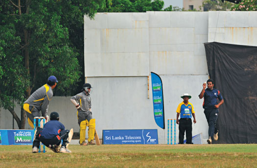
Our community platforms are based on our being a catalyst in the macro development vision. In readying future generations for the challenges of a global marketplace, in gearing connectivity for business to thrive, in spearheading technological innovation to spur empowerment among communities or in steering the country towards achieving its vision of being South Asia's Economic Hub, we have laid the foundation for being ready when the Future Calls this country, to lead and to direct this region.
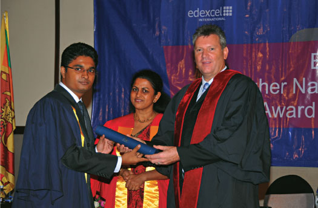
Our visionary stance is evidenced in our continued partnership with the nation's Deyata Kirula development initiative, where we as the national telecommunication solutions provider create an enabling network of connectivity that spans rural and urban areas. This seamless connectivity is our solution for a nation that has for too long grappled with challenges and the technological innovation we espouse is the raison d'étre for our communities to rise above the quagmire and win.
We have constructed our community foundation on the sustainable development features of education, spearheading professionalism, sport development, and preserving our heritage and developing national enterprise.
Our social initiatives have immense ownership displayed by our team, a sense of volunteerism that makes them unselfishly move with great speed to assist communities and society segments who need immediate assistance. This was amply evidenced when our employees speedily contributed towards relief in natural disasters, visited the Viharamahadevi Balika Vidyalaya at Maradana to celebrate World Children's Day, the Rainbow Girls' Home in Gonawela and Rainbow Boys' Home in Ja-ela, Isuru Lama Niwasa in Makola, the SOS Children's Village in Piliyandala and three children's homes in the Kegalle district. Under the theme of providing "hope to less-fortunate children", they spent time, energy and their own funds, emotionally propping these orphaned children and giving them emotional support while also materially contributing to their wellbeing.
Our team engaged with organizations like the Asia Foundation to present books to these homes, present small gifts and refreshments and organize entertainment to give these children some joy in their lives. In addition, the SLT teams continue to organize blood donation campaigns. Two were held during the year at SLT Head Office.
Empowered through education
SLT in collaboration with Asia Foundation
We have continued our literacy programme over nine years now, spreading the wealth of knowledge through the distribution of books and other educational material to schools across the country that are facing hardships. The flagship project under our community initiatives, we have in total presented 118,222 books during the year 2011 in collaboration with the Asia Foundation.
Summary Of Book Distribution
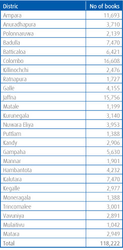
SLT & Logos Hope
We worked together with Logos Hope, the world's largest floating book fair, to bring knowledge, help and hope to multitudes in
Sri Lanka. The ship carried on board approximately 6,000 different titles on a wide variety of subjects. We sponsored the ship's first visit in 2011 to Sri Lanka, during which we embarked on numerous community service projects including book distributions. A total of Rs 2.5 million worth of books was presented to schools in Colombo, Anuradhapura and Mallavi districts. Other projects include:
Librarians' Training Workshop
Librarians from St. Mathew's College Colombo, Erawwala Vidyaloka Maha Vidyalaya and Depanama Dharmapala Kanishta Vidyalaya participated in a three day library training workshop at the SLT Havelock Town Library. This was aimed at helping librarians realize the catalytic role they play in shaping young minds and upgrading literacy across student bodies, given that they are the custodians of a wealth of knowledge held within the books entrusted to them. Six SLT team members were also trained at this workshop in order that they will impart that training to other librarians in the future. The training included introduction to systems and processes used in categorizing and labeling books to widely accepted global standards including the Dewey Decimal Classification System.
Upgrading of St. Mathew's College Library
A team of volunteers from both Sri Lanka Telecom and Logos Hope cleaned up, re-arranged and upgraded the St. Mathew's College library, categorizing and sorting the existing books, whilst new books on a wide variety of subjects were also donated to the library.
Higher education for employability
The BTEC Higher National Diploma conducted by the Sri Lanka Telecom Training Center in conjunction with a renowned UK university saw its fourth batch of diploma holders graduate this year. This diploma forms a solid foundation option presented for higher education and is worked in partnership with Edexcel International to inculcate an international curriculum into the diploma, on completion, students have the option of entering the third year of a B.Eng degree. This diploma opens up a path for numerous higher education options including an M.Sc. With an expert faculty and state of the art laboratories in addition to 'real time on the job' training, students gain first hand knowledge of the inner workings of the industry, which is highly advantageous for their future careers. The Training Center also conducts shorter specialist courses under UK's City and Guilds as a means to giving young people more options for employability.
Empowering professionalism
CIM Annual Conference 2011
Based on the theme, "Emerging themes in marketing', Sri Lanka Telecom continued as strategic partner of the CIM Annual Conference. This was also a milestone year for the country's premier professional marketing body as it celebrated its centenary.

"It is vital that the multi-cultural, multi-religious smorgasbord that has for centuries shaped and formed the Sri Lanka we know today continues to be the bedrock of our journey into the future
CIMA Business Leaders' Summit 2011
'Changing Challenge – Challenging Change' aptly summed up Sri Lanka Telecom's fundamental premise in being ready for the future, when we continued once again as the Strategic Partner to the world's largest and leading professional body of management accountants for the CIMA Business Leaders Summit 2011. With a membership of high calibre professionals who were added to a high powered audience of corporate movers and shakers, Sri Lanka Telecom's long standing partnership further reiterated the tenets of professionalism through the strategic partnership this year too.
National HR Conference 2011
This year's conference, which we have supported wholeheartedly for many years was based on the theme 'HR Powered Edge in a Booming Economy', highlighting Sri Lanka Telecom's commitment to having empowered enabled human resource capital. Organized by the Institute of Personnel Management (IPM), in its bid to demonstrate the importance of HR professionals' role in the journey of an organization, the conference this year added a new forum; the Union Leaders' Forum dealing with the facet of industrial harmony and cohesively bringing unions and employers to common ground for discussion and agreement.
Ceylon National Chamber of Industries Awards 2011
Contributing towards developing entrepreneurship and local industry especially in the SME sector, Sri Lanka Telecom strategically continued to support the Ceylon National Chamber of Industries through the CNCI Awards 2011. These awards are intended to gear the industrial community towards excellence, encouraging local industry, manufacturing and services to contribute towards the larger picture of development.
Philip Kotler in Colombo
We sponsored one of the most unique and important events in Sri Lanka's marketing field this year when the Sri Lanka Institute of Marketing (SLIM) organised Prof. Philip Kotler's first visit to Sri Lanka. We foresaw this as a one-time opportunity for Sri Lanka which will provide numerous benefits to businesses and professionals in the country and provided our support towards its success.
The Power of Sport
It has been scientifically proven that developing and engaging sport hones individual capabilities and creates team spirit, leadership skills and winning streaks, while training the mind towards tactical and strategic thinking. Sri Lanka Telecom continues to recognize the impact that sport has on creating holistic people and teams and the uniting spirit it inculcates in teams and individuals. We have involved ourselves in sports, primarily in supporting it at national level to create a strong foundation for it to flourish.
National Olympic Committee
Sri Lanka Telecom continued as a strategic partner for the National Olympic Committee, supporting the National Olympic Day Run and the Annual Sessions of the National Olympic Academy. The annual sessions are conducted to instill the Olympic values of friendship, solidarity, fair play and equality, mutual understanding and respect for others, with emphasis placed on ethics and fair play which will eventually determine the quality of leadership for the nation.
South Asian Beach Games
We sponsored the first ever South Asian Beach Games held in Hambantota, in which all eight South Asian countries participated.
Athletic Association of Sri Lanka
As Principal Sponsor of the Athletic Association of Sri Lanka, Sri Lanka Telecom supported the Women's National Athletic Meet, the Junior National Athletic Meet, the Senior National Athletic Meet and the National Athletic League.
Carlton Cup 2011
Forging values of unity, harmony and equal opportunity among all strata of society, Sri Lanka Telecom continued as Platinum Sponsor of the annual Carlton Cup organized by the Tharunyata Hetak Organization and the Carlton Sports Club.
School Big Match Tournaments
With Sri Lanka Telecom Mobitel being the premier sponsor of our national cricket team and given the passion displayed by young and old alike when it comes to cricket in Sri Lanka, we have undertaken the responsibility of supporting and encouraging budding young cricketers who will surely take on the mantle of a national cricketer in the future. This year too we sponsored the Battle of the Maroons held annually between Ananda and Nalanda Colleges.
Colombo Night Races
Sri Lanka Telecom came forward to sponsor the first ever Colombo Night Races held during December, which was one of the most unique events of the year in Sri Lanka's sporting calendar.
Appreciating our Heritage
In a country that proudly proclaims a heritage that spans millennia, as a corporate leader and responsible corporate citizen, Sri Lanka Telecom is extremely cognizant of the need to preserve and conserve the nation's cultural heritage. It is vital that the multi-cultural, multi-religious smorgasbord that has for centuries shaped and formed the Sri Lanka we know today continues to be the bedrock of our journey into the future. This therefore is the premise upon which Sri Lanka Telecom undertakes the task of being a flag-bearer in creating awareness and promoting the diverse heritage of Sri Lanka.
Heritage calendars
Since 2001, Sri Lanka Telecom has been conceptualizing and producing calendars and complimentary items on the central theme of creating awareness about our heritage, which includes arts, culture and bio-diversity. The primary objective is to raise awareness among the general public on the importance of preserving the rich heritage, which can be preserved for future generations. Past themes have revolved around endemic bird life, orchids, fresh water fish, kolam masks, butterflies of Sri Lanka, while last year, we portrayed the indigenous beauty of one of the world's protected rainforests, Sinharajah. In a journey through the Sinharajah Forest Reserve, which was designated a World Biosphere Reserve in 1978 and a World Heritage Site in 1988 by UNESCO. We used this calendar as a tool to create further awareness on the UN's declaration of 2010 being the "International Year of Biodiversity".
This year, under the theme of "Rediscovering hidden heritage". we focused on journeying through the hidden mists of time on the upcountry railway of Sri Lanka and drawing attention to the hidden essence and value of these sites. The theme was selected to coincide with the Government's "Visit Sri Lanka 2011" year. The calendar pictorially depicted the country's picturesque upcountry landscape, adding the vignettes of climate, geography and attractions, transporting the observer to a variety of different eras and a range of different cultures.
Festivals and Pageants
Sri Lanka Telecom sponsored one of Asia's most spectacular pageants this year - the Navam Perahera, in addition to the Amadhara Wesak Kalapaya organised by the Associated Newspapers of Ceylon Limited. In addition, we also supported the pageants held by the Bellanwila temple, the Kottel Rajamahavihara and the Devinuwara Vishnu Devalaya. The festivals and pageants unite communities under a serene umbrella of religion and harmony and help to create an environment of tolerance among all communities.
Paying tribute to one of Sri Lanka's doyens of film, we partnered the organisers of the Sir Lester James Peiris Oration to ensure that masters of their craft like Sir Lester James Peiris, will continue to be remembered and emulated by young and old alike.
Developing National Enterprise
Deyata Kirula National Development Exhibition 2011
Partnering a national cause for the fifth consecutive year, Sri Lanka Telecom was proud to be the Total Communications Provider for the Deyata Kirula Exhibition organized by the Government of Sri Lanka held in Buttala this year. Our stalls showcased the experiencing of a digital lifestyle, where in truth the future calls the nation, as we were able to present the future to the people of Buttala.
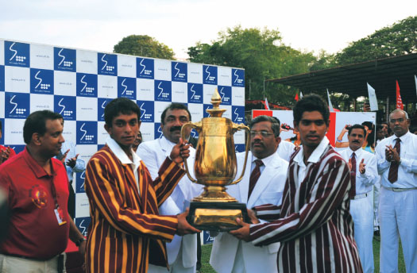
We provided an extensive portfolio built on the concept of communication in the future - which included voice communication services, PABX services for voice communication between stalls, point to point leased line connectivity and high capacity dedicated data connectivity on the SLT broadband network through SLT ADSL technology as well as M3, SLT Mobitel's 3.5G mobile broadband network. Products and services showcased included Broadband via ADSL technology and the SLT PeoTV features by providing visitors a firsthand experience of the ground breaking technology provided by IPTV, such as interactive television, video on demand and other services such as email, internet directory services, telephone and other business communications through one converged IP broadband network.
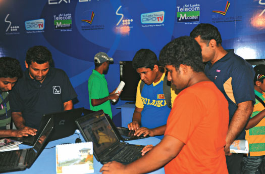
Ayurveda Expo 2011
Taking on the national goal of developing the science of Ayurveda and its medicinal properties into a holistically developed industry that can contribute considerably to the national economy given its roots in local industry, we were honoured to be a silver sponsor in this most rewarding endeavour. By supporting local industry and enabling the Ayurvedic industry to develop to its full potential, this international indigenous healthcare exhibition, trade fair and symposium brought together both local and overseas exhibitors and visitors and featured presentations by world renowned professionals.
A source of strength to the Differently Abled
We remain extremely committed to building an inclusive society and continue to work on focused programmes that will empower the challenged segments of society. Having already introduced Braille bills and donating Braille books for the visually impaired in the past, this year too, we built upon initiatives we had already embarked upon.
We tried to add a little more impetus into our drive of empowering challenged communities.
400 white canes were presented to visually challenged individuals commemorating International White Cane day to Sri Lanka Council for the Blind, Sri Lanka Organization of Visually Impaired Women, Sri Lanka Welfare Soceity of the Blind and Sri Lanka Council for Visually Handicapped Graduates.
We also provided training for five visually challenged individuals at the SLT Call Center for a period of five months, enabling them to gain a stepping stone in employability and empowering them with a skill which will ensure that employability.
Apart from these, we also continued to provided contributions towards Sri Lanka Federation of the Deaf, Sri Lanka Saukyadana Movement and Sri Lanka Deaf School Past Pupils' Association, amongst others.
Environmental Dimension
Responsibility towards the sustainability of the environment, the planet we live in and the impact our actions have on it is a business fundamental for Sri Lanka Telecom. The GRI Guidelines are now an imperative and in imbuing corporate responsibility and sustainability reporting. We are more than conscious that we too must adhere strictly to the guidelines wherever and whenever possible. The commitment to triple bottom line reporting which comes with the GRI Guidelines, gives stakeholders a platform to demand accountability of action on environmental impact.
We are an industry leader, a title bestowed on us by our by our peers as exampled in our continuous placement within the top ten corporate leaders in Sri Lanka. However, with these stewardships also comes a responsibility towards the environment. We have thus committed the concept of triple bottom line reporting into our reporting endeavours; creating an ethos where the impacts on the environment, the standards maintained and the efforts we permeate towards its preservation remain overriding factors in whatever we do. It is three years since we began this process and while it yet remains fledgling, we remain committed to making it a daily operational feature in our business dealings.
Environmental Objectives:
- To be compliant with legislation and deal with environmental issues accountably
- Design and develop products that have minimum environmental impact
- Optimize usage of energy and inculcate recycling, wherever possible
- Cascade environmental best practices to all employees through training, education and development
- Promote environmental care and appreciation of the environment through as many forums as possible
- Remain responsive to emerging issues
Sri Lanka Telecom Environmental Policy
To recognize the impact that our business has on the environment and thus to work in a manner that seeks to protect the environment and minimize or eliminate any adverse impacts caused to the environment by our day to day operations.
Environmental Certifications
Clearance certificates from the Central Environmental Authority to build transmission towers
Clearance certificates from Urban Development Authority and local authorities for new civil construction, based on their guidelines
Waste Management
The comprehensive and cohesive solid waste disposal system which conform to environmentally concerned guidelines is already in place and with the Quality Assurance Division having introduced the 3R concept (reduce, reuse, recycle), to the organization, we have seen tangible benefits. This brought about a methodical process to manage resources and wastage.
Our initiative to minimize paper usage gained a further impetus this year when an online system was introduced for vehicle requests eliminating the use of paper-based forms for this feature. We already have double sided printing, eliminating email prints unless absolutely necessary and using the Intranet for staff circulars in place which has created a positive consciousness among our team, while also moving us speedily towards a paperless office.
Energy Saving Awareness
Being an energy intensive business, our daily operations require great amounts of electricity. However, we continue to implement a number of energy management initiatives among our team to minimize energy usage. Into this equation, company-wide awareness programmes on energy saving and management are also conducted regularly.
A dedicated Energy Management Committee led by the Chief Administrative Officer helms the energy management initiatives. The committee comprises a cross functional team that analyses energy use, while identifying areas that could reduce consumption. This effort is an employee driven one, where all team members are encouraged to contribute ideas and if plausible, the committee makes the necessary recommendations for implementation.
All team members are also entailed with the additional responsibility of individually making efforts to conserve energy in their specific departments, in order to build a culture of energy management. Stipulated guidelines are already in place with simple procedures for the conservation of electricity, minimizing paper usage, utilizing low energy electrical fittings and transportation cost minimization being the result of critical study and recommended initiatives in place to create a more cost effective energy efficient workplace.
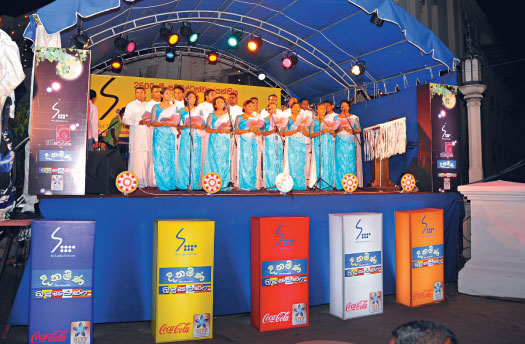